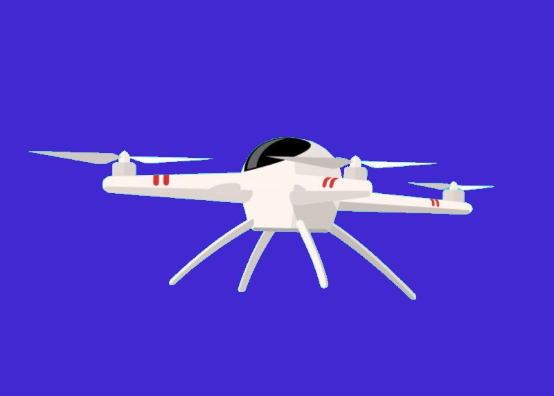

Obtén más beneficios con Detectdron adquiriendo el paquete premium
⨁ Aplicación movil
⨁ contenedor de basura
⨁ El dron detectara, recojera y depositara la basura detectada en un contenedor proporcionado con el paquete
⨁ El dron podrá identificar y diferenciar la basura organica e inorganica
⨁ Te hace recomendaciones para separado de basura y metodos de reciclaje
⨁ soporte y supervisión 24/7
